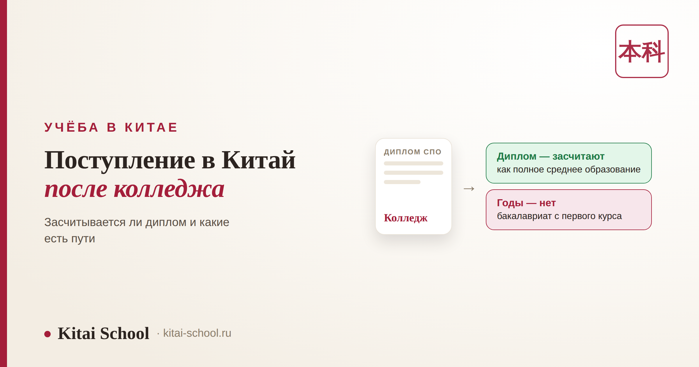
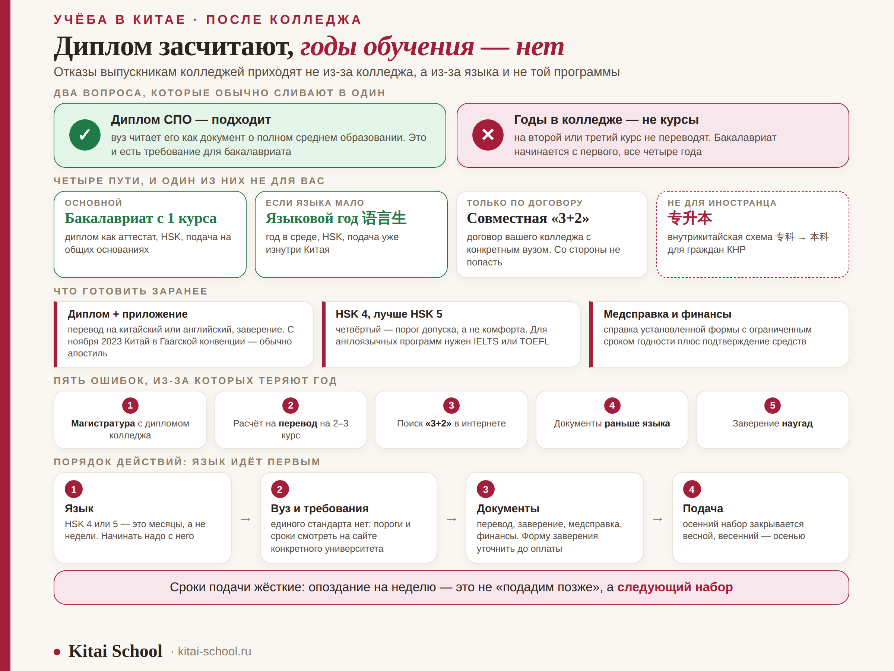

Учёба в Китае
Поступление в Китай после колледжа: засчитывается ли диплом и какие есть пути


Вопрос обычно звучит одинаково: «У меня диплом колледжа — меня вообще возьмут?» Короткий ответ: да, возьмут. Но за этим коротким ответом прячется вторая половина, из-за которой люди теряют год. Диплом колледжа и годы, проведённые в колледже, — это две разные вещи, и китайский вуз считает их по-разному. Разберём, что именно засчитывается, какие пути реально доступны и чем совместная программа «3+2» отличается от китайской 专升本, с которой её постоянно путают.
Поступить можно. Диплом СПО китайский вуз читает как документ о полном среднем образовании — это и есть базовое требование для бакалавриата. Но годы обучения не засчитываются: учиться начнёте с первого курса. В магистратуру напрямую нельзя, нужен диплом бакалавра. «3+2» работает только при договоре вашего колледжа с китайским вузом. 专升本 — внутрикитайская схема, иностранцу она в общем случае недоступна. Язык: обычно HSK 4, в сильных вузах HSK 5.
Короткий ответ: да, но не так, как обычно думают
Люди задают один вопрос, а имеют в виду сразу два, и путаница начинается здесь. Разведём их.
| Вопрос | Ответ | Что это значит на практике |
|---|---|---|
| Считается ли диплом колледжа документом об образовании? | Да | программа СПО включает полное среднее образование, а его и требует вуз |
| Засчитают ли мне годы обучения в колледже? | Почти никогда | бакалавриат начинается с первого курса, все четыре года |
Отсюда главный практический вывод. Отказы выпускникам колледжей приходят не из-за колледжа. Они приходят из-за языка, неполного пакета документов или подачи не на ту программу. Сам по себе диплом СПО дверь не закрывает.
Что китайский вуз видит в вашем дипломе
Приёмная комиссия смотрит на документ функционально: закрывает он требование о среднем образовании или нет. Российский диплом колледжа его закрывает — и на базе девяти классов, и на базе одиннадцати, потому что в обоих случаях программа среднего общего образования пройдена.
| Что у вас есть | Как это читает вуз | Итог |
|---|---|---|
| Диплом СПО | документ о полном среднем образовании | подходит для подачи на бакалавриат |
| Приложение с оценками | подтверждение содержания программы | нужно приложить обязательно |
| Три-четыре года профильных предметов | не курсы бакалавриата китайского вуза | на курс выше не переводят |
| Специальность по диплому | аргумент при выборе направления | помогает в мотивационном письме, но не даёт льгот |
| Диплом СПО вместо диплома бакалавра | не эквивалент высшего образования | на магистратуру не подать |
Перезачёт отдельных предметов формально возможен: вуз вправе освободить студента от части курсов. На практике это редкость, решение принимает сам университет и обычно речь идёт максимум об одном семестре. Планировать поступление, рассчитывая на перезачёт, нельзя — считайте, что учиться четыре года, а сокращение срока будет приятным исключением.
Четыре пути, и один из них не для вас
| Путь | Как устроен | Кому подходит |
|---|---|---|
| Бакалавриат с первого курса | подаёте диплом СПО как документ о среднем образовании, сдаёте HSK, поступаете на общих основаниях | основной путь для большинства |
| Языковой год, потом бакалавриат | год на программе 语言生 внутри китайского вуза, за это время доводите язык до нужного HSK и подаёте документы уже изнутри | если языка пока не хватает |
| Совместная программа «3+2» | договор вашего колледжа с конкретным китайским вузом: часть срока дома, часть в Китае | только если договор есть — со стороны не попасть |
| 专升本 (zhuānshēngběn) | китайская внутренняя схема перехода с 专科 на 本科, обычно плюс два года | рассчитана на китайских студентов, иностранцу в общем случае недоступна |
Про последние два стоит сказать отдельно, потому что их постоянно смешивают. 专升本 — это устройство китайской системы: выпускник трёхлетнего 专科 доучивается до полноценного бакалавриата 本科. Схема существует, она работает, но она про граждан Китая и внутренние правила приёма. Российский диплом в неё не подставляется.
«3+2» — совсем другое. Это не название китайской программы, а описание формата совместного обучения, и живёт оно исключительно на договоре между двумя конкретными учебными заведениями. Если ваш колледж такой договор подписал — прекрасно, спрашивайте в учебной части. Если нет, попасть на «3+2» со стороны невозможно: набор идёт только среди своих студентов.
Языковой год часто воспринимают как запасной вариант и зря. Он решает сразу три задачи: язык подтягивается в среде, вы физически находитесь в Китае и подаёте документы изнутри, а заодно успеваете посмотреть на вуз и город до того, как связать себя четырьмя годами. Как выглядит система образования с китайской стороны, разобрано в статье про колледжи в Китае.

Из личного опыта
Ко мне пришла девушка с дипломом колледжа по туризму и планом, который казался ей очевидным: три года она уже отучилась, значит, в китайском вузе её возьмут сразу на третий курс. Она даже выбрала университет и написала им письмо в таком духе. Ответ пришёл вежливый и обескураживающий: подавать можно, но на первый курс.
Потом выяснилось, что параллельно она отправила документы на магистратуру — «раз уж диплом есть». Оттуда отказ пришёл быстрее. В сумме на переписку и ожидание ушли месяцы, набор закрылся, год был потерян.
Второй заход мы построили иначе: языковой год, за него HSK 4, подача уже из Китая. Она поступила на бакалавриат и потом сказала фразу, которую я теперь цитирую: «Хорошо, что не взяли сразу — я бы не потянула лекции». Так что мораль двойная. Проверяйте требования до подачи, а языковой год не считайте потерянным временем.
Требования: язык, возраст, документы
Единого федерального стандарта приёма иностранцев в Китае нет: рамку задаёт министерство, а конкретные пороги ставит вуз. Поэтому ниже — типичная картина, а не закон.
| Требование | Обычная планка | Оговорка |
|---|---|---|
| Возраст | от 18 лет | верхняя граница для бакалавриата у части вузов — около 25 лет |
| Образование | полное среднее, диплом СПО подходит | нужен и диплом, и приложение с оценками |
| Китайский язык | HSK 4 для большинства программ | сильные вузы и популярные направления просят HSK 5 |
| Английский язык | IELTS или TOEFL для англоязычных программ | там китайский не нужен вообще |
| Здоровье | медицинская справка установленной формы | делается незадолго до подачи, срок годности ограничен |
| Финансы | подтверждение средств на обучение и проживание | сумму и форму справки задаёт вуз |
Отдельная тема — заверение документов. Диплом и приложение переводят на китайский или английский, а перевод заверяют. С ноября 2023 года Китай участвует в Гаагской конвенции, поэтому чаще всего речь идёт об апостиле, а не о старой консульской легализации. Но требования вузов расходятся, и это тот случай, когда лучше один раз написать в приёмную комиссию, чем оплатить не ту процедуру.
Про язык: HSK 4 — это порог допуска, а не комфорта. Слушать лекции по специальности на этом уровне тяжело, и первый семестр обычно уходит на выживание. Если есть возможность прийти с HSK 5, приходите с HSK 5. Что именно проверяют на четвёртом уровне и как к нему готовиться — в разборе экзамена HSK 4.
Сколько это стоит и есть ли бесплатные варианты
Обучение на бакалавриате платное, стоимость сильно зависит от вуза, города и специальности. Плюс общежитие, страховка, виза и жизнь. Но бесплатные пути есть, и выпускник колледжа имеет к ним такой же доступ, как выпускник школы: правила стипендий смотрят на уровень образования, а не на его тип.
| Вариант | Что это | Подробно |
|---|---|---|
| Государственная стипендия CSC | покрывает обучение, часто общежитие и стипендию на жизнь | полный разбор CSC |
| Гранты и стипендии вузов | собственные программы университетов и провинций | как выиграть грант |
| Бюджетные пути в целом | обзор всех бесплатных вариантов и требований | поступление на бюджет |
Сколько уходит на жизнь помимо учёбы — считали отдельно в статье про то, дорого ли в Китае.
Пять ошибок, из-за которых теряют год
| Ошибка | Чем оборачивается | Как правильно |
|---|---|---|
| Подавать на магистратуру с дипломом колледжа | отказ, потерянные месяцы | сначала бакалавриат, магистратура после него |
| Рассчитывать на перевод на второй-третий курс | рушится весь план и бюджет | считать четыре года, сокращение — исключение |
| Искать «программу 3+2» в интернете | время уходит впустую | спрашивать в своём колледже, есть ли договор |
| Начинать с документов, а не с языка | пакет готов, а HSK нет — набор закрыт | язык ставить первым пунктом плана |
| Заверять документы наугад | деньги потрачены, форма не та | написать в приёмную комиссию до оплаты |
И общее правило поверх всех пяти: сроки подачи в Китае жёсткие. Осенний набор закрывается весной или в начале лета, весенний — осенью. Опоздание на неделю означает не «подадим позже», а «ждём следующего набора».
Частые вопросы (FAQ)
Можно ли поступить в Китай после колледжа?
Да. Диплом о среднем профессиональном образовании китайские вузы принимают как документ о полном среднем образовании, а это и есть базовое требование для бакалавриата. Отказ приходит не из-за колледжа как такового, а из-за языка, неполного пакета документов или подачи не на ту программу.
Засчитают ли годы, проведённые в колледже?
Как правило нет. Диплом закрывает вопрос со средним образованием, но не заменяет курсы бакалавриата, поэтому учиться вы начнёте с первого курса. Перезачёт отдельных предметов теоретически возможен, решает его вуз, и на практике он редко превышает один семестр.
Что такое программы «3+2» и кому они доступны?
Это совместные программы конкретного российского учебного заведения с конкретным китайским вузом: часть срока учитесь дома, часть в Китае. Работают они только при действующем договоре между заведениями. Если ваш колледж такого договора не имеет, попасть на «3+2» со стороны нельзя — придётся поступать обычным путём.
Можно ли после колледжа сразу в магистратуру?
Нет. Для магистратуры нужен диплом бакалавра, диплом колледжа его не заменяет. Это самая частая и самая дорогая ошибка: люди подают документы на магистратуру, получают отказ и теряют год.
Какой уровень китайского нужен для поступления?
Для программ на китайском обычно требуют HSK 4, сильные вузы и популярные специальности — HSK 5. Для англоязычных программ китайский не нужен, но нужен IELTS или TOEFL. Точный порог всегда смотрите на сайте конкретного вуза: единого требования для всей страны нет.
Как заверить диплом для подачи в Китай?
Нужен перевод диплома вместе с приложением на китайский или английский язык и официальное заверение. С ноября 2023 года Китай участвует в Гаагской конвенции, поэтому чаще всего речь об апостиле. Требования вузов при этом расходятся, так что форму заверения уточняйте в приёмной комиссии до того, как оплачивать процедуру.
Язык — единственный пункт в этом списке, который нельзя сделать за месяц до подачи. На онлайн-курсах Kitai School мы готовим к HSK и помогаем разобраться, что именно спрашивает конкретный вуз. Диагностический урок — бесплатный.
Или напишите слово КОЛЛЕДЖ нашему менеджеру в Telegram — разберём вашу ситуацию.
Дальше по теме: как устроено профобразование с китайской стороны — есть ли в Китае колледжи; бесплатные пути — поступление на бюджет; экзамен для поступления в вузы — CSCA; что с работой после учёбы — работа в Китае для иностранца.
Источники
- Википедия: Образование в КНР — устройство ступеней 专科 и 本科.
- Гаагская конвенция об апостиле — Китай участвует с ноября 2023 года.
- Правила приёма иностранных студентов конкретных китайских университетов — требования к возрасту, HSK и документам различаются от вуза к вузу.
- Практика Kitai School — сопровождение учеников с дипломом СПО при поступлении.
Всё получится, главное — начать с языка! 加油！